Incident Summary
12
Security / Theft Events
- Multiple UTVs, equipment, fencing
30+
Mechanical Events
- Pile delays, equipment, torque checks
10+
Electrical Events
- Cable, skid, module issues
10
Weather Standdowns
- Lightning halts, Easely site
4
UXO / Civil Holds
- Zones 1, 2, 8/9, 13 affected
3
Quality Events
- QM departure, PRE process issues
Incident Categories — Easely I
Security / Theft
7/23/2025 – 5/18/2026
Ecobilt Fuel Pump Theft (7/23)C&W UTV Theft (7/26)UTV Found in Fence, 1 Stolen (1/12/26)Fence Cut, Mandrill Stolen, Zone 7 (12/4)UTV Theft, Polaris & Trailer (5/18/26)Late Report - RUTV2939 (5/27/26)
Mechanical
8/11/2025 – 4/16/2026
Gerdau Pile Fabrication Delay (8/11)Equipment Requests Not Processed (11/4)Missing Piles Email (11/6)Torque Checks Zone 8/9 (1/23–1/27/26)Missing Black Pile (2/25/26)Drive Times 72% E1 (3/31/26)PRE Survey 3542 Pile Refusal Count (4/16)
Electrical
8/14/2025 – 12/31/2025
Electrical Skid Pre-Task (8/14)Module Wrong Wattage Delivered (10/20)MV Cable Sporadic Deliveries (10/16)Damaged MV Cable Installed (11/18)FAI - Above Ground DC (12/31)First MV Cable on Site (8/19/25)
Civil / Site / UXO
8/9/2025 – 2/24/2026
Work Halted Zone 8/11/12/13 — UXO (8/9)Work Halted Zone 13 — UXO (9/25)IPX unable to enter Zone J/11 (2/21/26)IPX stops backfill — trench cleaning (Throughout)Inverters Placed, Main Laydown Yard (8/19)Jason Richardson — New Request System (7/31)
Incident Categories — Easely II
Security / Theft
12/4/2025 – 5/27/2026
2 UTVs, Fencing, Chargers Stolen Zone 11 (12/4)UTV Vandalized, 1 Possibly Stolen E1&2 (12/18)Fence Cut, UTV Stolen, Zone 13 (1/30/26)Fence Torn, Trailer & UTV Stolen Zone 13 (2/2/26)Zone 16 Fence Cut, UTV Stolen, Reach Lift Damaged (3/23/26)Theft Zone 13 (5/3/26)
Mechanical
8/18/2025 – 5/5/2026
Gerdau Piles Arrive Late — 2 Weeks (8/18)Non-Tracker Install Begins (8/18)Tracker Pile Install Begins (10/1)Inverters Set in E2 (10/20)Racking Installation Begins (10/29)Pile Deviation Photos Sent — PPP (11/4)Fleet Access/Vehicle Onboarding Issues (10/22)Smartsheets Access Granted (11/18)Pile Count E2 — Nestor Galvon (11/25)WW Pile Discrepancy Meeting (12/3)Torque Checks Zone 8/9 (1/23–1/27/26)Missing Yellow Pile (2/23/26)Drive Times 58% E2 (3/31/26)Sam Alamin Finishes E2 Drive Times (4/15)Drive Time Processing E1 72% E2 58% (5/5)
Electrical
10/16/2025 – 1/5/2026
MV Cable Ran Out — 750Kcmil (10/16)Westwood Drawing Revisions — Trench Issues (11/14)2nd Velociwrapper Delayed — No Truck (11/18)No MV Cable Production (11/18)Damaged 500Kcmil MV Cable (11/18)MC 12/12 Date — 120 Rows Required (11/18)MC Acceleration Plan 10k Modules/Day (1/5/26)
Site / Weather / Civil
8/25/2025 – 2/24/2026
Lightning Standdown 6:38-9:06 AM (8/25)Lightning Standdown 1:33-3:30 PM (8/26)Lightning Standdowns x2 (8/27)Lightning Standdowns (9/2, 9/4, 9/8, 9/17, 9/18)Lightning Standdown 11/22 & 11/23Civil Buffer Zone 2 F66A-5 (9/8)E2 Civil Unable to Work — UXO 10 Days (2/24/26)UXO IPX Halt Zones 1, J, Hutnil (2/21/26)
Quality
10/21/2025 – 1/12/2026
John Ruiz Abandons Site — No QM (10/21)QM Misunderstanding of PRE Process (11/18)George Hemingway Takes Over as Site QM (11/14)Ryan Dodson Arrives — Takes E2 Responsibility (1/12/26)
SEC
Ongoing theft and vandalism — Multiple UTVs, fencing, tools, and trailers stolen across Easely I and II zones. Latest report 5/27/2026, RUTV2939 not located during inventory audit. Police report filed A261380004.
Owner: Security Team
MECH
Drive time completion gap — As of 3/31/2026, team only had 25% drive times for Easely II and 35% for Easely I. Jeremiah Rodman finished processing: E1 72%, E2 58% as of 5/5/2026. Final gap still open.
Owner: Mechanical / Sam Alamin
MECH
Pile refusal count — PRE survey data processed 4/16/2026. 3,542 pile refusals identified. Resolution and rework plan pending.
Owner: Mechanical Team
ELEC
MC 2/2/26 acceleration plan active — Ramp to 10,000 modules/day. Equipment support plan initiated 1/5/2026.
Owner: Electrical / Site
CIVIL
UXO discovery delays — Multiple zones affected across project life. Most recent: IPX halted Zones 1, J, and Hutnil on 2/21/2026. Civil unable to work in E2 for 10 days per 2/24/2026 email confirmation.
Owner: Civil / Anthony Esparza
Full Chronological Incident Log
Scroll horizontally to browse · Click any dot to jump to the full entry below
Subcontractor - Ecobilt: Theft/Fuel Pump to Fuel Cell
Subcontractor - C&W: Theft/UTV
Jason Richardson introduces new system to request equipment
Work halted in zone 8/11/12/13 due to UXO discovery
Sean claims Gerdua will deliver 8/13 citing Gerdua fabrication issues as the reason
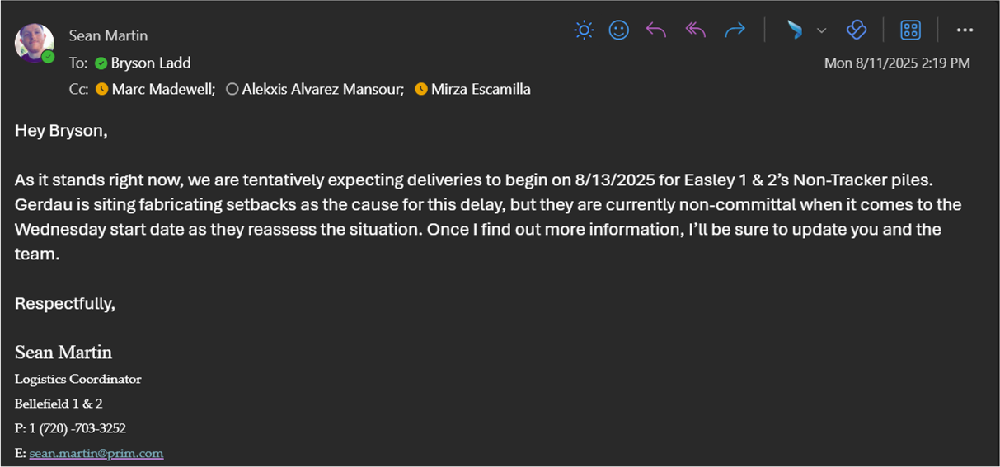
Photo 1
B2W Training on site
Mechanical Pre-task Internal Review (piles)
Electrical Skid Placement Pre-Task (Internal)
Gerdau piles begin arriving — two weeks late
Non-Tracker install begins in Easely II
Pre-Task for Electrical Skid Placement / Sub-Contractor Kick-Off / Mr. Crane
Inverters arrive and placed in the main laydown yard
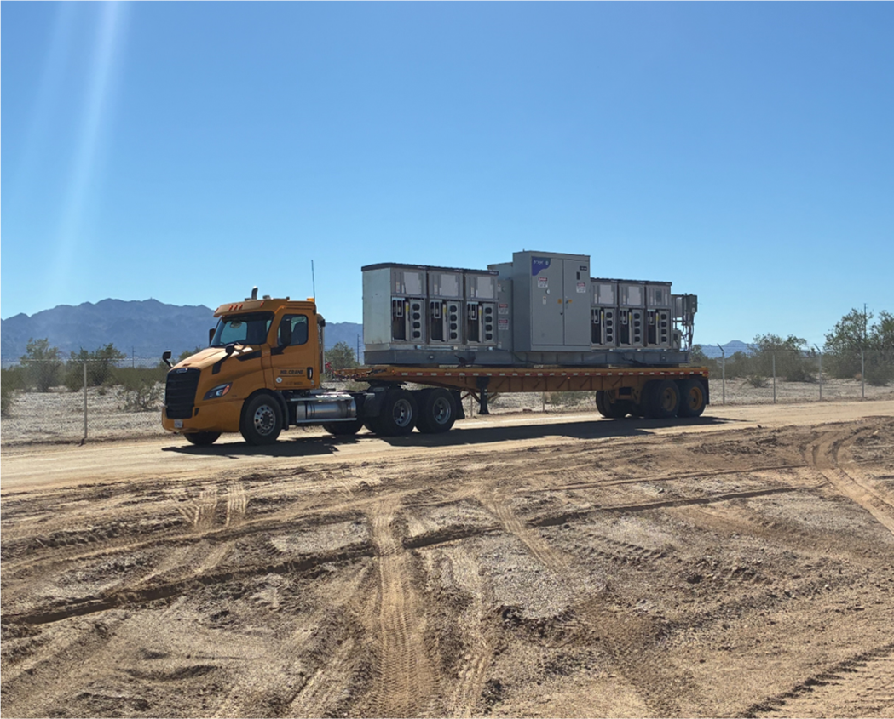
Photo 2
First MV cable arrives on site
Pile Prioritization for Delivery — Easely I & II Projects meeting, Gerdau promises 7 trucks a day
Safety issues a weather standdown due to lightning — 6:38–9:06 AM
PO process changes — Mechanical tool request sent to Michael Dihn
Safety issues a weather standdown due to lightning — 1:33–3:30 PM
Safety issues a weather standdown due to lightning — 4:42–8:54 AM & 9:53–10:33 AM
IPX would stop backfill operations every day — failed to understand that we clean the trench as we shade the cable
UXOs prevented civil team from entering Zone J / 11 / 12
Safety issues a weather standdown due to lightning — 9:53–10:33 AM
First Pile alignment — Piles Zone 7/F Block F68B-1
Safety issues a weather standdown due to lightning — 12:40–2:09 PM
Cultural Buffer prevented all civil work in Zone 2: F66A-5
Mechanical submits second equipment request for UTVs and forklifts
Safety issues a weather standdown due to lightning — 12:50–3:53 PM
Safety issues a weather standdown due to lightning — 5:00–3:30 PM
Pre-Task — Tracker Assembly Install Easely I & II (In-person)
Work halted in zone 13 due to UXO
Easely — NEXTracker design rev on additional seismic piles meeting with NXTracker
Tracker Pile Install begins in Easely II
First Install — Tracker Piles (In-Person), Zone 7 Block F68B-2 section 1 row 9
Wholesale MV cable deliveries sporadic. Easely 2 ran out of 750Kcmil cable on 10/16/2025. Told delivery coming 10/16 — that was not the case, cable arrived on 10/21/2025.
Easely 1 Module delivery of the wrong wattage for area installing. Have to stage areas we are not installing in.
Inverters set in Easely II
Doug Duzant, regional quality manager, is fired
John Ruiz abandons Easely leaving the site without a quality manager
Tracker Pile First Install Assessment
Mech team FIA for tracker pile fails — tape measure stretching leads to wrong measurements
Missing 9K reach lift for glass install needed to hit MC of 12/12 for the first 4 circuits — still an issue on 12/4/2025
Technology for foreman and general foreman not ready at onboarding — iPads and phones required for drawings, communication, and quantity processes. In most extreme cases took ~6 weeks to get devices to GF/F
Module Staging meeting — team discussed the module staging strategy between mechanical and electrical
Difficulty getting fleet trucks, buggies, vans. Employee ID required before requesting trucks. Onboarded employees had no vehicles. Still an issue on 12/4/2025.
Racking installation begins in Easely II
NXTracker FIA Easely II first row of the north-west section of block F52A-4
Mechanical submits equipment request for UTVs and forklifts after discovering previous reqs had not been processed
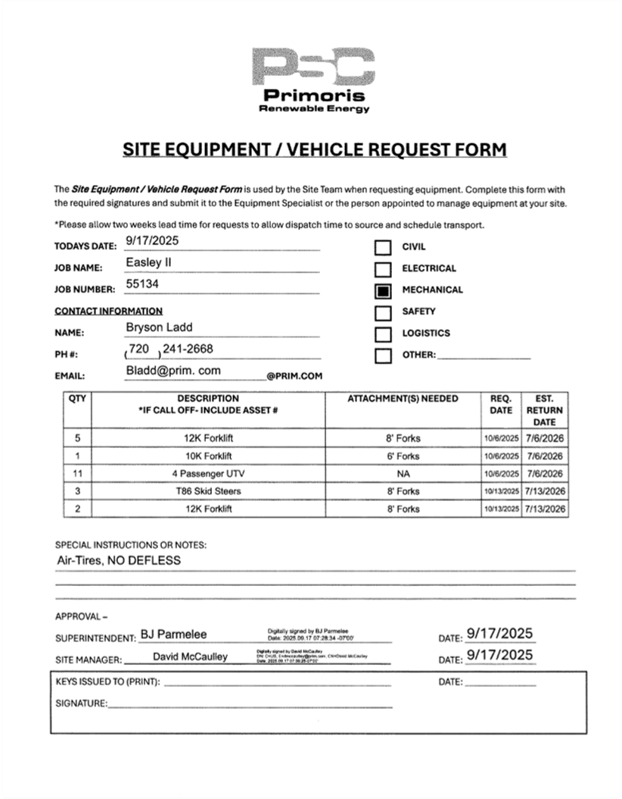
Photo 3
Nestor sends first photo showing pile deviations in the Preliminary Piles Per Block document and PPP
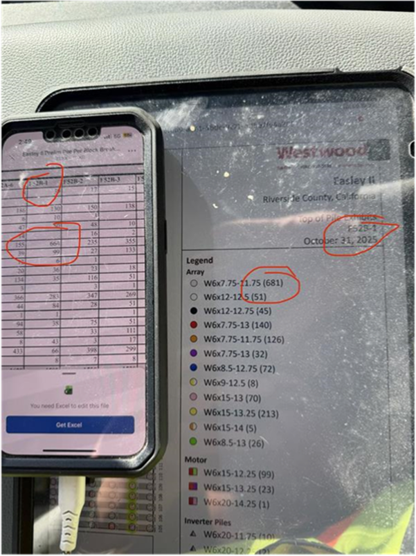
Photo 4
Mike Crossman provides an updated list of piles that need to be ordered
Missing Piles Email
First Install — Module Installation
Cameron Taylor arrives on site to help address quality issues
Mechanical team sends email to fleet requesting confirmation that the requests had been received. Jason Wicke responds that they had not received them.
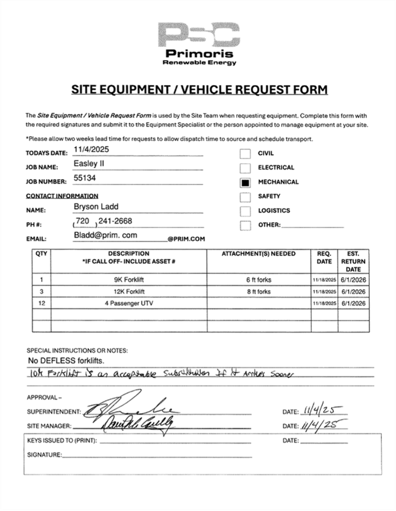
Photo 5
Westwood drawings have issues in latest revisions. Single line does not match scenarios listed in drawings. Civil digging up cable for IP to verify spacing and # of circuits within trenches.
George Hemingway takes over as site quality manager
Mechanical team finally receives access to Smartsheets to review equipment
2nd Velociwrapper delivery delayed — supposed to be delivered 6 weeks ago. Still no MV cable production for second velociwrapper due to no truck.
Quality on-site manager not understanding the PRE process and quality department needs. Unable to turn over the proper 120 rows necessary to hit the 12/12 MC date for the first 4 circuits.
Wholesale delivered MV cable of 500Kcmil that were damaged and not able to be used. Remained unnoticed until cable was installed — had to be pulled out of trench by hand.
Steven Gamboa completes a count of pile in Easely I
Safety issues a weather standdown due to lightning — 5:00–3:30 PM
Safety issues a weather standdown due to lightning — 5:00–3:30 PM
Pile Deficiency Log Training meeting with Cameron Taylor
Nestor Galvon completes a count of piles in Easely II
WW and PRE engineering meet to discuss pile discrepancies — BOMM & PPP Type Allocation review
Theft — mandrill and reel missing from trailer and clipped lock from connex, Easely 1, Zone 7
Theft — 2 stolen UTVs, cut fencing, multiple chargers, and trailer stolen, Easely 2, Zone 11
Mechanical team submits equipment request for the ramp up schedule
Security/Vandalism/Property Damage/Equipment Damage
Theft — skid steer left in different zone, 1 UTV vandalized, 1 other UTV possibly stolen, Easely 1 and 2
Easely 1 — FAI Above Ground DC
Meeting Easely I & II Circuits 1 & 2 acceleration plan to achieve MC 2/2/26. Ramp up to 10,000 modules/day, equipment to support 10,000 modules/day.
First mechanical layoff
Security/Property Damage/Fence & UTV
Theft/Security Breach — 1 UTV found caught in fence line, 1 UTV stolen, 1 UTV vandalized, Easely 2
Ryan Dodson quality manager arrives on site — taking over responsibility for E2
Second mechanical layoff
Mechanical team has a team meeting with WW to discuss motor pile issues (Motor Hole Mounts?)
Third mechanical layoff
OT Hours: 166, DT Hours: 40 — Mechanical team begins torque checks in zone 8/9 E2
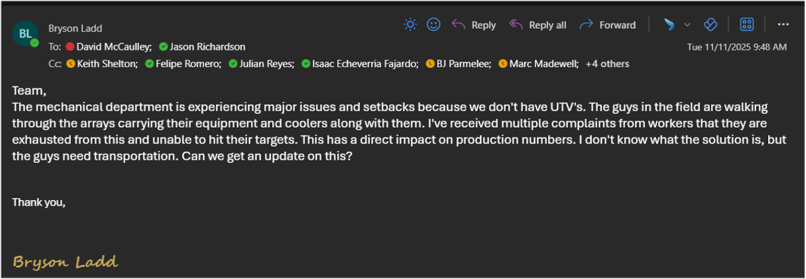
Photo 6
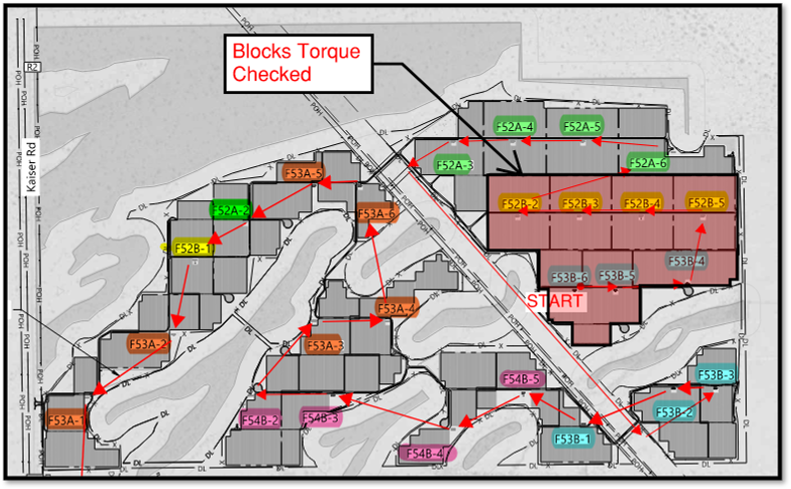
Photo 7
Torque Checks 300 hours
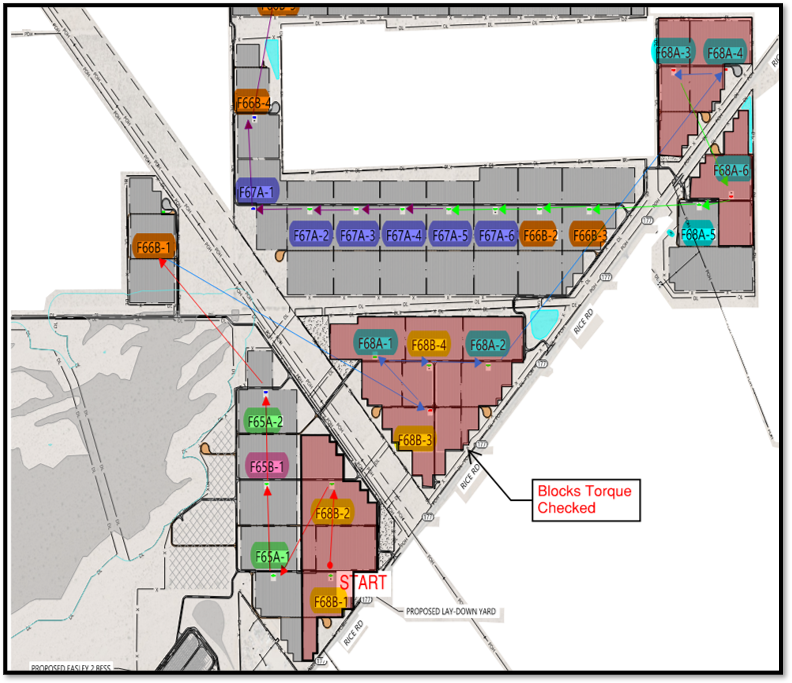
Photo 8
Torque checks end in zone 8/9 E2 — Hours: 210 OT Hours: 3.5
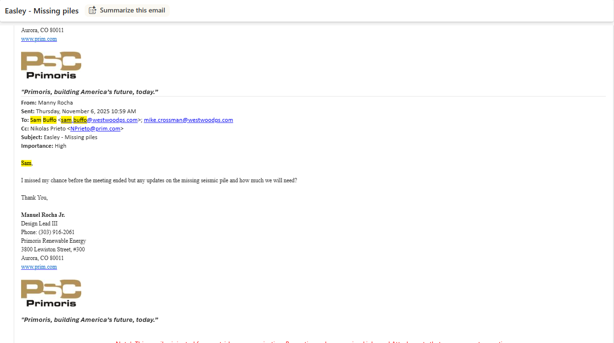
Photo 9
Torque Checks 220 hours
BJ Parmelee starts sending emails to Judy Duran to add equipment to B2W
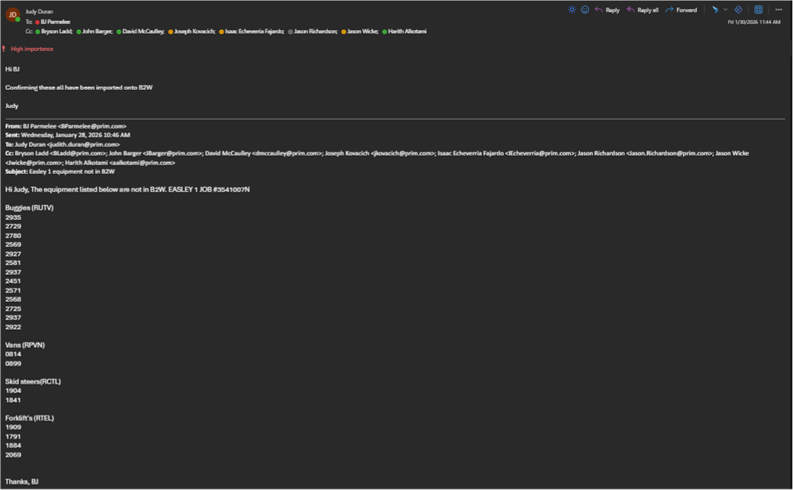
Photo 10
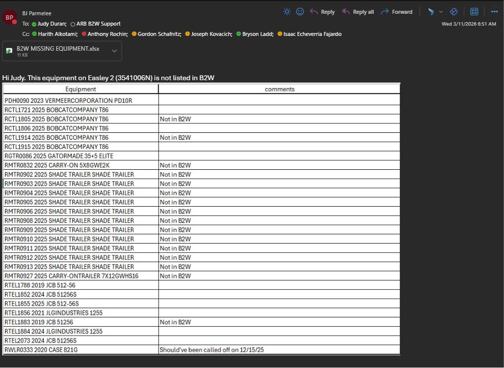
Photo 11
Fourth mechanical layoff
Security/Theft — Fence line cut out, 1 stolen UTV, stolen tools, 2 stolen generators, and 3 stolen water truck keys, Easely 2, Zone 13
Lane David becomes regional quality manager
Security/Theft — Fence was torn down, 1 trailer and 1 UTV was stolen, Easely 2, Zone 13
UXO discovered — IPX halts work in zones 1, J, & Hutnil, a sweep is conducted
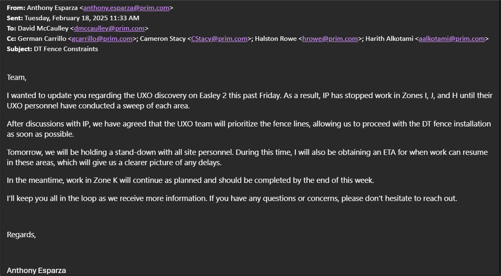
Photo 12
Easely II Missing Yellow pile arrives
Anthony Esparza email confirms that civil has been unable to work in E2 for 10 days due to UXO discoveries

Photo 13
Easely I missing Black pile arrives
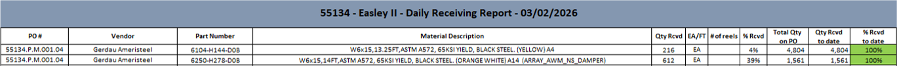
Photo 14
Missing piles arrive on site
Mech team submits dispatch for last ramp up
Security/Theft — Easely 2, Zone 16 fence cut, 1 UTV reported stolen and Reach Lift damaged
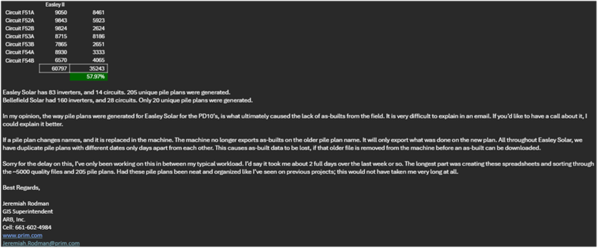
Photo 15
Mechanical team sends email to Sam Alamin requesting missing drive times — team only had 25% for Easely II and about 35% for Easely I
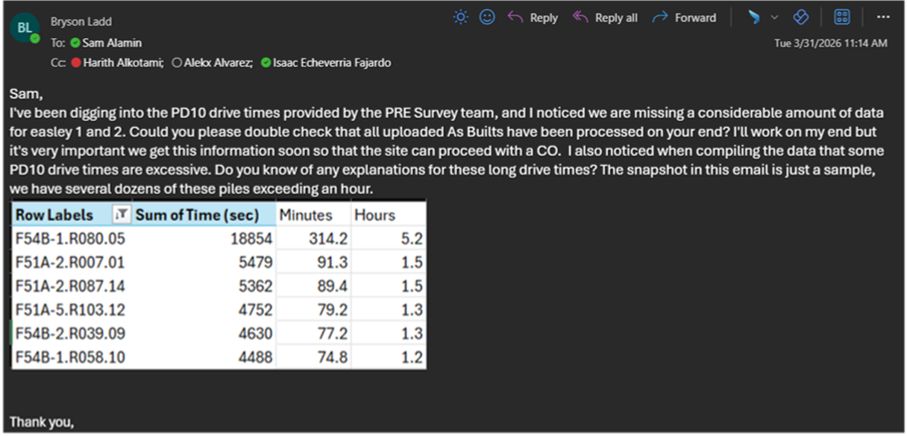
Photo 16
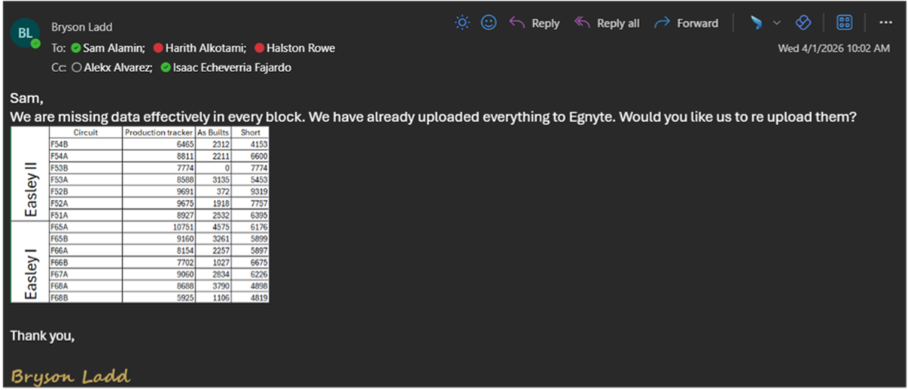
Photo 17
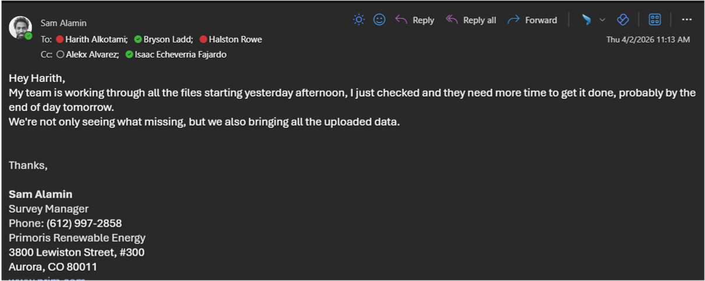
Photo 18
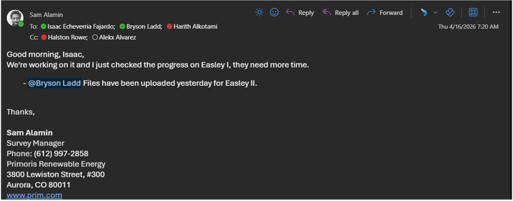
Photo 19
Sam Alamin finishes Easely II drive times and uploads them to Egnyite
Mechanical team processes PRE Survey data to obtain a pile refusal count: 3,542 piles
Theft in Zone 13
Jeremiah Rodman finishes processing drive times for both sites: E1: 72% & E2: 58%
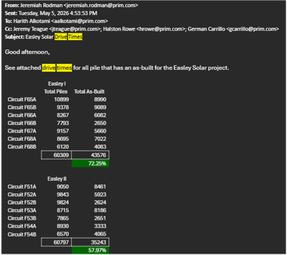
Photo 20
Security/Theft — Stolen UTV RUTV2505 – Easely BESS/PV Area – Police Report # A261410007
Security/Theft — Theft of Polaris UTV and Trailer from O-F Corridor, Easely 1
Late Report — Report Only: UTV RUTV2939 Not Located During Inventory Audit — Easely Police Report # A261380004
Last mechanical layoff
Harith extends NXTPower tooling contract